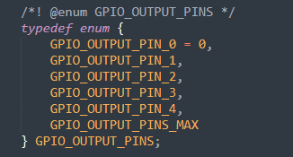
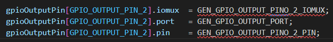
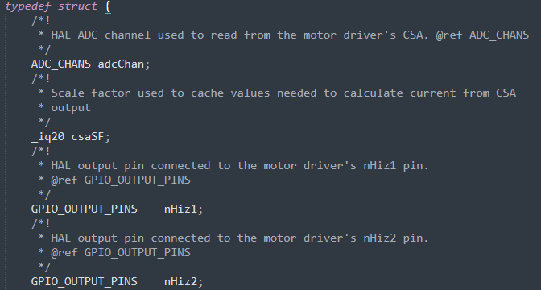

Library Software Overview¶
1. Overview¶
MSPM0’s Brushed Motor Control Library is made up of two key modules. The HAL module that provides Application Programming Interfaces (APIs) to manipulate and configure MCU pins and peripherals. Then there is the motor driver module that provides APIs to control the motor driver.
Figure 1 - Diagram showing how the modules and application interact with each other
2. HAL Module¶
2.1 Overview¶
The HAL module is a microcontroller abstraction layer that providers generic APIs to control and configure the microcontroller’s pins and peripherals. The HAL APIs were developed to allow changing of the HAL module used without requiring any code changes to the motor driver module.
The HAL is purposely meant to only abstract the key pins and peripherals needed to control a motor driver. A user is free to expand the HAL’s API to support other peripherals and features of the microcontroller but its strongly recommended not to modify existing APIs to ensure ease migration to new versions of this library.
No application specific code or motor driver specific code should exist in the HAL layer or in its API. Instead, it treats the pins and peripherals in a generic manner. For example, a motor driver likely has a nSLEEP pin but the HAL layer will only provide APIs to control the state of a GPIO output pin. It’s the responsibility of the motor driver module to associate the specific HAL GPIO output pin to the motor driver’s nSLEEP pin.
2.2 Enums¶
The HAL layer heavily utilizes enums to provide a generic reference to different pins and peripherals. As mentioned above, the HAL layer is responsible for dictating which physical pin and peripheral each of the enum values are associated with. This allow the HAL to change which pin or peripheral is associated with a given enum value without requiring code changes for any code that utilizes its API such as the motor driver module. As an example, lets take a closer look at the GPIO_OUTPUT_PIN_2 enum value.

Figure 2 - Example enum representing GPIO output pins
Figure 2 shows an example of an enum that represents 5 different GPIO output pins. The purpose of this enum is to provide a way for the HAL and motor driver APIs to reference GPIO outputs in a generic manner. The HAL is free to determine how many gpio output pins it wants to support. The developer will need to keep in mind the maximum amount of gpio output pins the different motor drivers they want to support will require.

Figure 3 - Enum to MCU pin mapping
Figure 3 shows a snippet from the LP-MSPM0L1306 HAL which shows how the GPIO_OUTPUT_PIN_2 enum is now associated with a specific GPIO on the MSPM0L1306. The GEN_GPIO_OUTPUT_XXXX defines are from TI Sysconfig that will be discussed later but note that each of those defines are representing values needed by the MSPM0’s driverlib api to manipulate the specific pin.

Figure 4 - HAL API example
Now that HAL provides the information needed to associate an enum to a specific pin, HAL_setGPIOOutput shows the API used to change the output value of a pin associated with a given GPIO_OUTPUT_PINS enum. Its important to note here how the enum value is translated to MSPM0’s driverlib api calls by utilizing internal structures and arrays in the HAL.

Figure 5 - Motor driver to HAL mapping
Here is a snippet from one of the DRV8706-Q1 example programs associating different HAL enums to corresponding pins on the motor driver. Here nHiz1 pin on the motor is mapped to GPIO_OUTPUT_PIN_2.

Figure 6 - Motor driver module API
Finally when the user wants to change the output value of the nHiz1 pin on the DRV8706-Q1 motor driver, they use the generic HAL API while providing the enum value that is associated with nHiz1 to make the change. Although this example is focused on GPIO_OUTPUT_PINS enum, the concept is the same for every other pin and peripheral the HAL has created enums for such as PWM, ADC, gpio input and SPI enums.
2.3 TI SysConfig¶
MSPM0 supports software called TI SysConfig whose purpose is to simplify configuration of pins and peripherals utilizing a GUI tool. Almost all MSPM0 SDK examples utilizes SysConfig and there are other documentation in the SDK and online that goes into depth about how SysConfig works and how to use it. But it is important to note that the HAL modules provided by the SDK uses SysConfig which is why you will not see driverlib API calls to initialize peripherals and pins. Instead, the HAL uses defines created by SysConfig to map the specific pin and peripheral to the different generic HAL enums. Figure 3 shows how the GEN_GPIO_OUTPUT_XXXX defines created by SyConfig are then mapped to the HAL structures and enum value.
3. Motor Driver Modules¶
The two key objectives of the motor driver module is to associate the HAL’s enums representing MCU pins to the physical pin of the motor driver and provide APIs to make it easy for the user to control a motor driver. Figure 7 shows an internal structure used by the DRV8706-Q1 motor driver and how it contains variables meant to associate the HAL enums with specific pins on the motor driver such as nHiz1 and nHiz2.

Figure 7 - DRV8706-Q1 internal structure
3.1 Motor Driver Pin Association¶
The mapping of the motor driver pins to specific HAL enums is done in the user’s application as the below snippet shows.
Figure 8 - Mapping motor pins to HAL pins
3.2 Motor Driver APIs¶
The motor driver module APIs are specific to a given motor driver and meant to simplify key and common configuration of the target motor driver while also providing a foundation for users to build on top of. For example, DRV8706-Q1 has many drive modes like Half-Bridge and Phase Enable mode that will be common for users to use. Switching to these different modes is a multistep process. Therefore, the DRV8706-Q1 module has a simple API that performs all these steps via a single API call. Figure 9 shows an API to switch to Half Bridge mode.

Figure 9 – Example motor driver module API
DRV8706-Q1 as an example has many register settings that many users will not use or change. Therefore, you won’t see a ton of APIs meant to manipulate the different registers and bitfields. However, as shown above there is a spiUpdateRegister function that performs a spi read modify write operation that makes it easy for a user to modify the register’s bitfields that their specific application needs to change. This function is a good example of simple API calls that the user can build on top of to expand the motor driver module to fit their application’s needs.
3.3 Creating a Motor Driver Module¶
If you look through the motor driver module’s code you will note that the code tends to be very simple thanks to the HAL APIs it utilizes. The complexity of manipulating the microcontroller is hidden within the HAL module which makes developing motor driver module’s very simple. This means it will be easy to create your own motor driver module either because this library doesn’t have support for it or because you want something more tailored for your target application. Its important to note that to ensure flexibility and reusability for your own motor driver module ensure that your motor driver module only has calls to the HAL API.